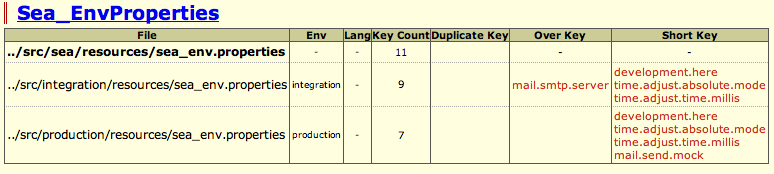

SAFluteのタイプセーフProperties
SAFluteの特徴の一つです。
${indexlist}Propertiesを使ったきっかけ
Propertiesはとてもシンプル
プログラムにハードコードしたくないコンフィグや環境依存のコンフィグなどの管理に、Javaの古来からある Properties (.propertiesファイル) を利用しています。
Javaの経験の長い人であれば、Propertiesとは古いなぁと思われるかもしれません。 XMLに移り変わって、最近ではJSON形式でプロパティを管理する現場もあるかと思います。 ですが、Propertiesは構造を扱えない単なるkey-valueで、逆に不自由でとてもシンプルであるという一面に着目しました。
これはやめたい！diconの環境ごとの切り替え
とにかく一番避けたいと思ったのは、diconファイルなどDIコンテナのコンポーネント管理をするファイルに環境依存のコンフィグ値を埋め込んで、ローカル、結合、本番と切り分ける方法です。
e.g. これはやめたい！Diconファイルに環境依存の値を埋め込んで本番では切り替える @Dicon
<component name="sea" class="org.dbflute.Sea">
<property name="key">land</property>
</component>
diconファイルは、たまたまXMLファイルの形式をとっていますが、いわゆる設定ファイルというよりかは、コンポーネントの生成と依存関係のロジック だと捉えています。
クラス構造が変わったり、依存関係が変わったら修正する必要があります。 すると、時には環境依存のコンフィグ値は何も変わっていないのに本番用のファイルを修正しないといけないことも。 本番用のファイルは厳密には本番でしかテストできません。できるだけ修正する階数は減らしたいものです。 そして、環境依存のコンフィグ値は、間違いを起こしにくくチェックもしやすいシンプルな構造で管理したいものです。
PropertiesHTMLによるチェック ☆
SAFluteでは、環境依存のコンフィグ値を [アプリ名]_env.properties という Properties で管理して、環境ごとに切り替えます。 また、環境依存でないコンフィグ値も、統一性や管理のしやすさの面、そして、いざ環境依存に変わってもプログラムに影響がないように、同じく Properties で管理します。
e.g. リファレンス実装のMaihamaプロジェクトでの環境ごとのProperties @Directory
maihama-common
|-src/main/resources
| |-maihama_config.properties // 環境依存しないコンフィグ
| |-maihama_env.properties // ローカル環境用のコンフィグ (環境ごとにコピーされる)
|
|-src/main/integration
| |-maihama_env.properties // 結合環境用のコンフィグ
|
|-src/main/production
| |-maihama_env.properties // 本番環境用のコンフィグ
とはいえ、Propertiesの差分をDIFFツールなどで見ようとすると、なかなか見づらいものです。 なぜなら、value値は違う値が入っていて当然で差分ノイズが出てしまうからです。 これはXMLでもなんでもファイルを切り替えれば同じですが、Propertiesがシンプルで不自由がゆえに、それを支援する機能が利用できます。
DBFlute の PropertiesHTML を使って、キー値の差分をチェックすることができます。 どの環境のファイルに、どのキーが余計で、どのキーが足りていないかが一目瞭然です。 これを使って、環境ごとのコンフィグ値の追加や修正による作業ミスをチェックすることができます。
PropertiesHtmlのDIFF部分の例 
{kind=link}
"Propertiesは不自由である" というのがここで効きます。自由度が高すぎると、こういったチェックツールを作るのが大変になります。 (XMLの差分ドキュメントも作ろうともしましたが、ちょっと挫折しています...)
継承できる Properties ☆
通常の Properties のいやなところ、プロジェクト共通のプロパティもアプリ(ドメイン)ごとにコピーしないといけないところ。 コンフィグだけでなくバリデーションエラーなどの画面表示するメッセージ(いわゆるメッセージリソース)も、文言が変わったらアプリごとにコピーした Properties を修正しなければなりませんでした。
SAFluteでは、Propertiesを継承できるようにし、共通の .properties ファイルとアプリごとの .properties ファイルを分けながらも、Java側では同じインターフェースで取得できます。
e.g. リファレンス実装のMaihamaプロジェクトでのProperties継承構造 @Directory
maihama-common
|-src/main/resources
|-maihama_config.properties // スーパークラスならぬスーパーProperties
|-maihama_env.properties // さらにスーパーProperties
|-maihama_message.properties // 共通のメッセージリソース
maihama-dockside
|-src/main/resources
| |-dockside_config.properties // サブクラスならぬサブProperties
| |-dockside_message.properties // アプリ固有のメッセージリソース
e.g. maihama_config.properties に定義されてる sea.land のプロパティを取得 @Java
// maihama_config のプロパティも docksideConfig インターフェースから取得できる
// (ここでは、"sea.land" というキー値のプロパティを取得している)
String prop = docksideConfig.getSeaLand();
ちなみに、環境依存しないPropertiesと環境依存するPropertiesも継承関係にあるため、移動しても呼び出し側プログラムを修正する必要はありません。
もちろん、プロパティをオーバーライドすることもできます。 プロパティの一行コメントに、@Overrideというアノテーションを付けるとオーバーライドできます。
e.g. @Overrideアノテーションを付けて明示的オーバーライド @Properties
# @Override seaとかlandとか適当な感じなのでこれはサンプルのプロパティ
sea.land = IKS
@Overrideを付けずにオーバーライドすると、例外になります。 あくまで設定ファイルですから、暗黙のオーバーライドによるトラブルが発生しないようにしています。
タイプセーフな Properties ☆
そしてこれが一番の特徴です。Javaプログラムの中で、キー値をハードコードせずにプロパティ値を取得することができます。 DBFluteのFreeGenを使って、キー値に対応するメソッドを自動生成します。
e.g. FreeGenを使って Properties のインターフェースを自動生成 @Java
// "sea.land" というプロパティがあったら getSeaLand()
String prop = docksideConfig.getSeaLand();
e.g. メッセージリソースのインターフェースも自動生成 @Java
DocksideMessages messages = createActionMessages();
if (...) { // Formの値をチェックして
// "errors.sea.land" というプロパティがあったら addErrorsSeaLand()
messages.addErrorsSeaLand(...); // 引数はFormのプロパティ名と{0}などのパラメーター
}
自動生成時に参照したプロパティの値がtrue/falseであれば boolean を戻す isXxx() メソッドが、数値であれば Integer を戻す getXxxAsInteger() というメソッドも一緒に自動生成されます。
e.g. boolean を戻す Properties のメソッド @Java
// "sea.land" というプロパティの値が true or false だったら isSeaLand()
if (docksideConfig.isSeaLand()) {
...
}
また、メソッドのJavaDocコメントには、キー値に加え、自動生成時に使ったプロパティ値と一行コメントを参考に載せています。 わざわざ .properties ファイルまで見に行かなくても、プログラミング中にそのプロパティがどんなものなのかを補完しながら理解することができます。
e.g. 自動生成された Properties のインターフェースのメソッドのJavaDoc @Java
/**
* Get the value for the key 'sea.land'. <br />
* The value is, e.g. IKS <br />
* comment: seaとかlandとか適当な感じなのでこれはサンプルのプロパティ
* @return The value of found property. (NullAllowed: if null, not found)
*/
String getFooBar();
プロパティのキーを打ち間違えることもなく、プロパティのキーが変われば自動生成し直せばコンパイルエラーで検知、 そのプロパティを利用している箇所を洗い出したかったら、メソッドの呼び出し階層をIDE(Eclipseとか)で検索、そんな Properties です。
フレームワーク変更に強いアーキテクチャ
SAFlute自らインクリメンタル開発 で作られました。 というか、それは現場フィットなフレームワークの宿命だと言えるでしょう。
(少なくとも最初は)フレームワーク自体が、アプリの開発と同時に進んでいきます。 そのとき、フレームワークも手直しがたくさん入ります。ですが、アプリで既に実装が始まっているため、修正すると影響が出てしまいます。 フレームワークの都合でディベロッパーのスピードを落とすことはあってはなりません。
- あまりフレームワークのクラスに依存しないこと (フレームワークの吸収層を作る)
- diconファイルをコピーしないこと
- できるだけタイプセーフで影響範囲が特定しやすいこと
こういったことがフレームワークのインクリメンタル開発には求められます。